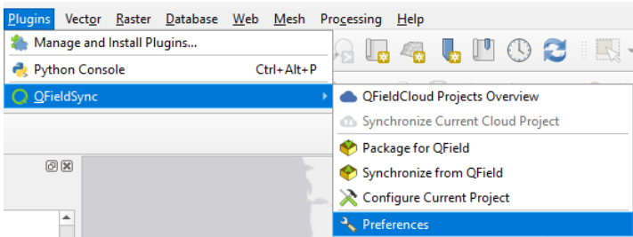
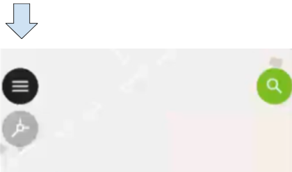
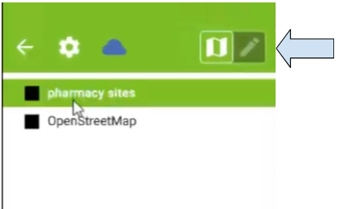
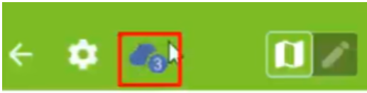
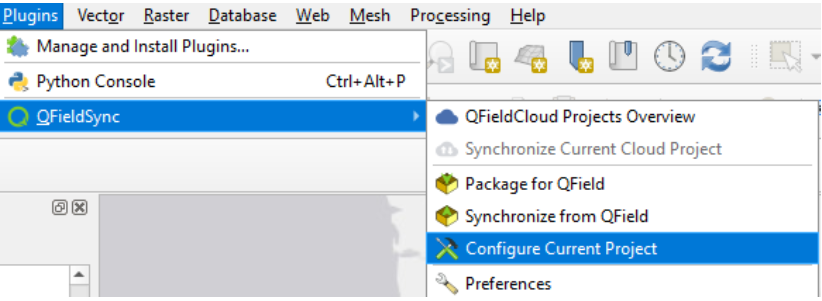
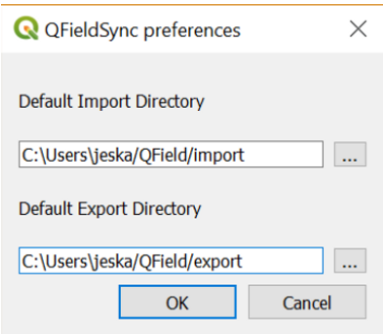

Getting Started with QField
- First, with the QFieldSync installed, you will have to configure your current QGIS project. Before you configure your project, you will have to add any layers that you want to be a part of your field campaign. Once you’ve added them, you can start to configure and set up your QGIS project.
- Select offline editing for the layers that you wish to edit on your mobile device.
- Select remove if you don’t want the layer available on your mobile device.
- Click on Plugins > QFieldSync > Preferences 
- Packaging Project for Qfield
- Before beginning packaging, make sure you have saved your QGIS Project.
- Navigate to the Plugins menu. Select Plugins > QFieldSync > QFieldCloud Projects Overview
- A small icon in the lower left is the Create New Project button. Select it. This will create a new QFieldCloud project.
- The default setting is to Convert currently open project to cloud project (recommended). Use the default setting. Click Next.
- Provide a name for your project. It can be the same as the QGIS project name. Write a short description. Under Local Project Settings, leave the Local Directory in its default setting. Click Create.
- You will notice that your project name changes to “[project name] (QFieldCloud).” When your project is uploaded, synced, and the circle is green, you are ready to return to QField on your mobile device.
- Open QFieldCloud in QField on Mobile Device
- Click on your project. QFieldCloud will package the project and download it onto your mobile device.
- Once the download is completed, you can click on your project again to open the map.
- Collecting Points
- Open the menu icon on the left. 
- To the upper right are two icons depicting a map and pencil.
- Select a layer you want to edit in the list and click on the pencil icon to edit. Tap on the map or tap the back arrow to return to the map. 
- In the edit mode, additional icons appear in the lower right on the main map. The uppermost icon locks and unlocks the editing cursor on your location. You can collect points that are not at your location by unlocking the cursor, tapping and dragging on the screen.
- The green plus button at the bottom of the screen collects points.
Tapping the button pulls up an attribute box that includes the fields you created in QGIS Desktop. The checkboxes at the right of every attribute allow remembering of the last entered value for each attribute individually. - Syncing QField to QfieldCloud
- Tap the Menu.
- The blue cloud button opens a window with several options for syncing. The small number next to the blue cloud indicates how many changes have been made to the map in QField.
- Tap the blue cloud 
- Tap Synchronize.
- Reintegrating Data from QFieldCloud to QGIS Desktop
- Open QGIS Desktop. Open the project that QFieldCloud in the name.
- Navigate to Plugins > QFieldSync > Synchronize Current Cloud Project.
- A window will pop up. You can choose which direction to sync, i.e., replace the cloud version with desktop version, or replace the desktop version with cloud version.
- To sync from the cloud, check the box below the blue cloud icon, or click Prefer Cloud at the bottom of the window. Click Perform Actions. Click OK when the sync is completed. The points you logged in the field should be visible in your project.
Add a basemap.
All the configurations will be saved to your current QGIS project.
Plugins > QField Sync > Configure Current

In the Layers section, configure your layers
Select or type the directories where you want your QFieldSync import and export files to be stored (or leave the default paths):
Open QField on mobile device. Select QFieldCloud Projects. It will ask you to log in to your account or create an account if you do not have one.

If uploaded successfully, you should see your project name appear shortly under My Projects tab. You may need to tap the Refresh projects list.